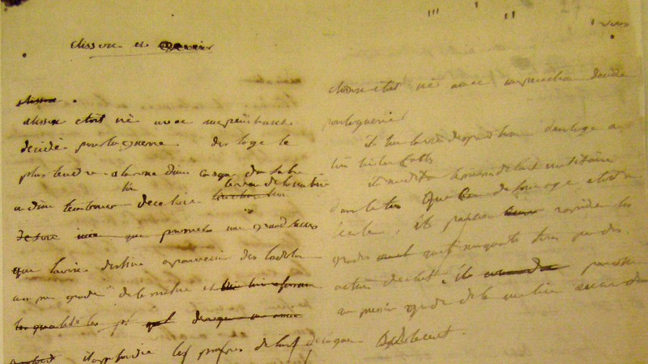

1. My Conquests in Italy and Munnar
“I advanced with the precision of an artillery strike…”As I stood on the rolling tea‑clad hills of Munnar... , it reminded me of the Apennines—green, immovable, and inspiring. The morning mist felt like the rumor of armies approaching. In this place, I planned my strategies over steaming cups of chai rather than maps, yet the discipline remained the same. “Here, amid tranquil plantations, I feel both invincible and contemplative. The breeze whispers of campaigns past, and in its soft echo I sense the discipline of my soldiers marching at dawn.”
Recent Blog Posts
2. Meditations in Egypt and the Sphinx
“Between pyramids and timeless stone, I reflected upon empire…” Under the unyielding gaze of the Great Sphinx, I felt the pulse of ancient dynasties beneath my feet. This image of eternity put into stark contrast the fleeting glow of my own reign. In the desert’s silence, I penned thoughts on power, legacy, and the burdens of leadership. “The Sphinx watches without judgment. I, once ruler of nations, here kneel merely a man. In this solitude, I realize that all empires—like pillars of sand—must eventually yield to time.”
Date: 23/02/1827
3. Reflections on the Seine in Paris
“Returning home, the riverbanks taught me humility…” Walking along the Seine’s banks, bathed in twilight’s golden haze, I recalled my first days in Paris: the grandeur of triumph, then the sting of exile. Each ripple of the river carried memories—of speeches echoing through the Tuileries, of Waterloo’s smoke rising above distant hills. “Paris welcomes me not as an emperor, but as a man seeking solace. The river flows as I once did—powerful, yet always at the mercy of its course.”